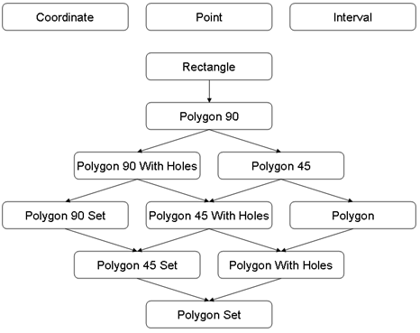

目录
- Boost.Polygon 主页
- Design Overview
- 各向同性
- 坐标概念
- 区间概念
- 点概念
- Segment 概念
- 矩形概念
- Polygon 90 概念
- 带孔 Polygon 90 概念
- Polygon 45 概念
- 带孔 Polygon 45 概念
- 多边形概念
- 带孔多边形概念
- Polygon 90 集合概念
- Polygon 45 集合概念
- 多边形集合概念
- 90 度连通性提取
- 45 度连通性提取
- 连通性提取
- 90 度属性合并
- 45 度属性合并
- 属性合并
- Voronoi 主页
- Voronoi 基准测试
- Voronoi 构建器
- Voronoi 图
其他资源
Polygon 赞助者

Polygon 库设计概述
Polygon 库使用受 C++ 概念启发的模板编程, 提供按概念类型重载的泛型库函数. Polygon 库类型系统中目前有十三个概念. Polygon 库中的概念对象只是一个空 struct, 类似于标签分派所用的标签. 这些概念显示在下方的细化关系图中.

图中气泡之间的箭头表示概念细化关系. 这与普通类之间的继承关系类似, 但并不相同. 一个概念的细化收窄了更一般概念的定义. 例如, 矩形概念是多边形概念的一种细化, 因为它把多边形限制为四边、轴平行、直线的图形. 概念的细化对于期望对给定概念进行只读访问的 API 总是可接受的, 但对于期望写入该概念的 API 则绝不可接受. polygon 库中有三类几何: 一般情形、限制为 45 度倍数角的情形, 以及角限制为 90 度倍数的 Manhattan/直线情形. 细化关系图显示, 90 度概念是 45 度概念的细化, 而 45 度概念又是一般情形的细化. 这使得编译器可以在三种算法实现之间进行选择, 为传递给函数重载的概念数据类型 (包括 90 度、45 度与一般情形几何的异构组合) 选出最佳算法. 要为上图中十个通过细化相互关联的概念类型中的任意一对对象提供执行交集运算的operator&, 库要支持整整一百种不同的概念类型组合, 但实现该运算符只需三个重载 (交集运算的 90 度版、45 度版与任意角度版各一个), 因为细化使接口实现得以泛化. 这样, 库实现了一个完全对称、完整且内部一致的 API, 为所有 API 中有意义的所有参数类型组合提供有意义且正确的行为. 例如, 把数据从多边形复制到矩形没有意义, 因此尝试这样做会产生语法错误, 而把矩形复制到多边形则是有意义的. 用于在概念之间复制几何数据的 assign() 函数只为 49 种有意义的概念组合实例化, 而不会为 51 种非法组合实例化. 尝试非法赋值操作时看到的语法错误简单明了, 因为库使用 SFINAE 对泛型函数进行重载, 在未提供重载的场合编译器找不到任何匹配的函数.
error: no matching function for call to 'assign(rectangle_data<int>&, polygon_data<int>&)'
每个概念都关联一个特征 struct, 通常必须针对给定数据类型对其进行特化, 以提供数据类型接口与库所要求的该类型对象预期行为之间的概念映射. 库还为每个概念提供了符合默认特征定义的自己的数据类型. 这些库提供的数据类型不过是提供对其数据进行访问的哑容器, 依赖泛型库函数来强制不变式, 并提供其几何类型特有的有用行为——在 OO 设计中这些行为通常是该数据类型的成员函数. 库数据类型符合与其相关几何概念关联的默认特征, 并被注册为该概念的模型. 当一个数据类型通过特征映射到某个概念后, 还需通过特化 geometry_concept 元函数把它作为该概念类型注册到库. 映射并注册之后, 用户数据类型即可在按概念重载的泛型自由函数中与库数据类型互换使用.
用于把数据类型映射到概念的特征分为可变特征与只读特征. 只读特征在库内部经过特化, 可用于任何作为某概念细化类型的类型. 可变特征只为精确建模该概念的对象定义. 一个类型要建模某概念, 只读特征与可变特征都需定义; 但只要没有需要修改该对象的 API 与之配合, 该类型也可以在不定义可变特征的情况下使用. 例如, 可以把三角形类型注册为 polygon_concept, 为其定义只读特征而不定义可变特征. 这使得三角形类型可以传入任何期望以 const 引用指向多边形模型对象的 API.
某个概念的模型对象如果经运行期判定符合其细化概念的约束, 通常可以被视作任一细化概念的模型. 这种概念转换通过view_as<>() 函数完成. 例如, 概念类型 polygon 90 的对象如果有四条边, 则它必定是矩形, 并可用以下语法将其视作矩形:
view_as<rectangle_concept>(polygon_90_object)
函数view_as<>() 的返回值可以传入任何期望其模板参数所指概念类型对象的接口. 这一几何对象概念转换能力的一个例外是: 多边形集合对象不能被视作单个多边形或矩形.
| 版权: | 版权所有 © Intel Corporation 2008-2010. |
|---|---|
| License: | 按 Boost 软件许可 1.0 版 (Boost Software License, Version 1.0) 分发. (随附文件 LICENSE_1_0.txt 或复制于 http://www.boost.org/LICENSE_1_0.txt) |